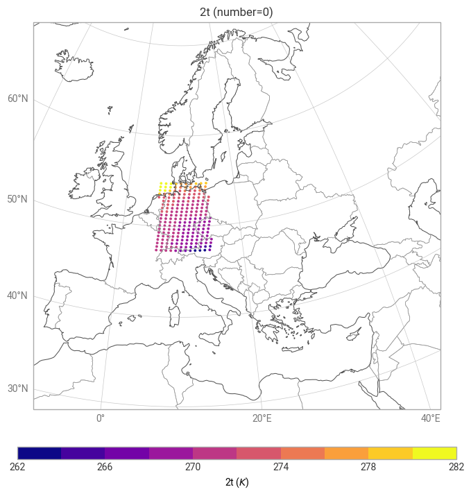
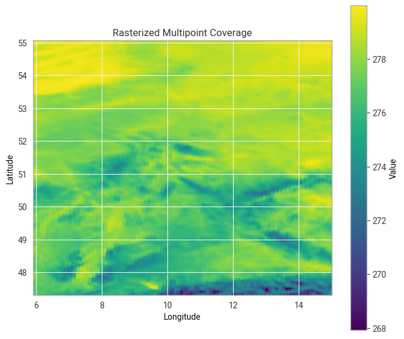
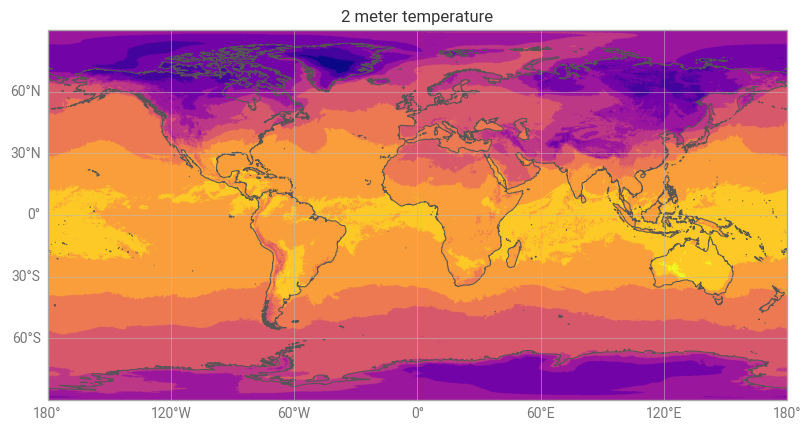

Polytope Climate-DT Bounding Box example notebook#
This notebook shows how to use earthkit-data and earthkit-plots to pull destination-earth data from LUMI and plot it using earthkit-plot, as well as convert to geotiff both from full GRIB fields and extreacted bounding boxes.
Before running the notebook you need to set up your credentials. See the main readme of this repository for different ways to do this or use the following cells to authenticate.
You will need to generate your credentials using the desp-authentication.py script.
This can be run as follows:
Show code cell source
%%capture cap
%run ../desp-authentication.py
This will generate a token that can then be used by earthkit and polytope.
Show code cell source
output_1 = cap.stdout.split('}\n')
access_token = output_1[-1][0:-1]
Requirements#
To run this notebook install the following:
pip install earthkit-data
pip install earthkit-plots
pip install earthkit-regrid (Optional for spectral variables)
pip install cf-units (Optional for unit conversion in maps)
If you do not have eccodes installed please install eccodes using conda as it is a dependency of earthkit, or install earthkit via conda
conda install eccodes -c conda-forge
conda install earthkit-data -c conda-forge
Show code cell source
import earthkit.data
import earthkit.plots
from earthkit.regrid import interpolate
Show code cell source
# Defaults to making a live data request. Set to false to use the cached GRIB file instead.
import os
LIVE_REQUEST = os.getenv("LIVE_REQUEST", "true").lower() == "true"
LIVE_REQUEST
Show code cell source
request = {
"activity": "projections",
"class": "d1",
"dataset": "climate-dt",
"experiment": "ssp3-7.0",
"generation": "2",
"levtype": "sfc",
"date": "20400102",
"model": "ifs-nemo",
"expver": "0001",
"param": "167/165",
"realization": "1",
"resolution": "standard",
"stream": "clte",
"type": "fc",
"time": "0000",
"feature": {
"type": "boundingbox",
"points" : [[55.1, 5.9], [47.3, 15.0]],
},
}
Show code cell source
data_file = "../data/climate-dt-earthkit-geotiff.covjson"
if LIVE_REQUEST:
data = earthkit.data.from_source("polytope", "destination-earth", request, address="polytope.mn5.apps.dte.destination-earth.eu", stream=False)
data.to_target("file", data_file)
else:
data = earthkit.data.from_source("file", data_file)
Show code cell source
ds = data.to_xarray()
ds
<xarray.Dataset> Size: 10kB
Dimensions: (datetimes: 1, number: 1, steps: 1, points: 215)
Coordinates:
* datetimes (datetimes) <U20 80B '2040-01-02T00:00:00Z'
* number (number) int64 8B 0
* steps (steps) int64 8B 0
* points (points) int64 2kB 0 1 2 3 4 5 6 ... 208 209 210 211 212 213 214
latitude (points) float64 2kB 47.36 47.36 47.36 ... 54.72 54.72 54.72
longitude (points) float64 2kB 13.82 13.03 7.5 6.711 ... 6.158 7.105 14.68
levelist (points) float64 2kB 0.0 0.0 0.0 0.0 0.0 ... 0.0 0.0 0.0 0.0 0.0
Data variables:
10u (datetimes, number, steps, points) float64 2kB 0.6923 ... 9.793
2t (datetimes, number, steps, points) float64 2kB 262.7 ... 279.1
Attributes: (12/16)
activity: projections
class: d1
dataset: climate-dt
Forecast date: 2040-01-02T00:00:00Z
experiment: ssp3-7.0
expver: 0001
... ...
resolution: standard
stream: clte
type: fc
number: 0
step: 0
date: 2040-01-02T00:00:00ZShow code cell source
chart = earthkit.plots.Map(domain="Europe")
chart.point_cloud(ds['2t'])
chart.coastlines()
chart.borders()
chart.gridlines()
chart.title("{variable_name} (number={number})")
chart.legend()
chart.show()

Show code cell source
from covjsonkit.api import Covjsonkit
cov = Covjsonkit().decode(data._json())
# mp = cov.to_geotiff()
Show code cell source
import rasterio
import matplotlib.pyplot as plt
with rasterio.open("../data/multipoint_2t.tif") as src:
data = src.read(1)
extent = [src.bounds.left, src.bounds.right, src.bounds.bottom, src.bounds.top]
print("Extent:", extent)
plt.imshow(data, extent=extent, origin="upper", cmap="viridis")
plt.colorbar(label="Value")
plt.xlabel("Longitude")
plt.ylabel("Latitude")
plt.title("Rasterized Multipoint Coverage")
plt.savefig("../data/multipoint_2t.png")
plt.show()
with rasterio.open("../data/multipoint_2t.tif") as src:
print("Band count:", src.count)
for i in range(1, src.count + 1):
arr = src.read(i)
print(f"Band {i}: min={arr.min()}, max={arr.max()}")
Extent: [5.900662251656, 15.000662251656, 47.300045049637, 55.060045049637]

Band count: 1
Band 1: min=267.91541290283203, max=279.9843215942383
This file can then be uploaded as user data on the DestinE story editor here https://dea.destine.eu/web/stories/editor, and plotted on a 3d globe.
Full Field Extraction and conversion to GeoTIFF#
Show code cell source
request = {
"activity": "projections",
"class": "d1",
"dataset": "climate-dt",
"experiment": "ssp3-7.0",
"generation": "2",
"levtype": "sfc",
"date": "20400102",
"model": "ifs-nemo",
"expver": "0001",
"param": "167/165",
"realization": "1",
"resolution": "standard",
"stream": "clte",
"type": "fc",
"time": "0000",
}
Show code cell source
data_file = "../data/climate-dt-earthkit-geotiff_2.grib"
if LIVE_REQUEST:
data = earthkit.data.from_source("polytope", "destination-earth", request, address="polytope.mn5.apps.dte.destination-earth.eu", stream=False)
data.to_target("file", data_file)
else:
data = earthkit.data.from_source("file", data_file)
Show code cell source
data.ls()
| centre | shortName | typeOfLevel | level | dataDate | dataTime | stepRange | dataType | number | gridType | |
|---|---|---|---|---|---|---|---|---|---|---|
| 0 | ecmf | 2t | heightAboveGround | 2 | 20210101 | 0 | 0 | fc | None | healpix |
| 1 | ecmf | 10u | heightAboveGround | 10 | 20210101 | 0 | 0 | fc | None | healpix |
Show code cell source
chart = earthkit.plots.Map(extent=[-180, 180, -90, 90])
chart.grid_cells(
data[0],
)
chart.title("2 meter temperature")
chart.coastlines()
chart.gridlines()
chart.show()

Data must be converted from HEALPIX first as we cannot convert to GeoTIFF directly.
Show code cell source
out_grid = {"grid": [1,1]}
r = interpolate(data, out_grid=out_grid, method="linear")
Show code cell source
r.ls()
| centre | shortName | typeOfLevel | level | dataDate | dataTime | stepRange | dataType | number | gridType | |
|---|---|---|---|---|---|---|---|---|---|---|
| 0 | ecmf | 2t | heightAboveGround | 2 | 20210101 | 0 | 0 | fc | None | regular_ll |
| 1 | ecmf | 10u | heightAboveGround | 10 | 20210101 | 0 | 0 | fc | None | regular_ll |
Show code cell source
r.to_target("file", "../data/_test.tiff")
Show code cell source
ds1 = earthkit.data.from_source("file", "../data/_test.tiff")
ds1.ls()
| variable | band | |
|---|---|---|
| 0 | 10 metre U wind component | 1 |
| 1 | 2 metre temperature | 2 |